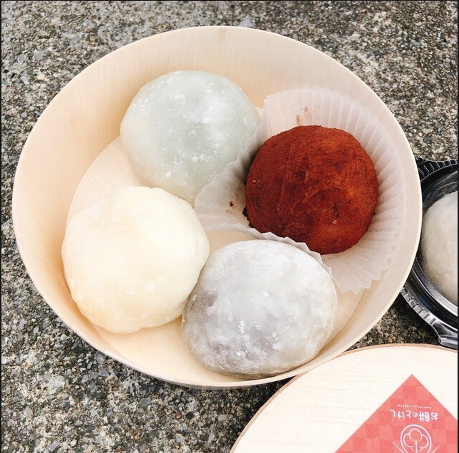
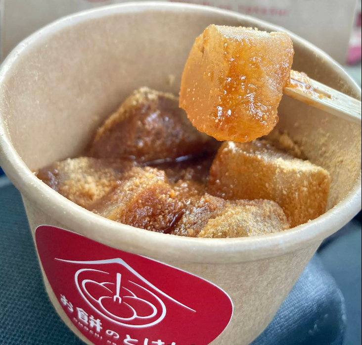
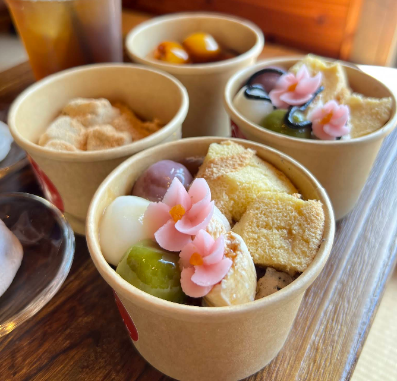

【もちもち最強】地元民に愛される「お餅のとけし」で餅食い尽くし！



沖縄の北谷町にある「お餅のとけし」は、地元のお餅屋さんとして長く愛されている名店です!
夕方頃にはほとんど売り切れてしまう大変人気のあるお餅やさん!
その秘密は素材をそのまま仕入れ、一から店内で作られている昔ながらの温かい味にあります。
種類豊富な商品と合わせて、お餅の概念が変わる体験ができます！
店舗情報
- 店名
- お餅のとけし
- 住所
- 沖縄県中頭郡北谷町字浜川204番地1
- 営業時間
- 8:00～17:00（完売次第終了）
- 定休日
- 日曜・祝日
- ウェブサイト
- https://omochinotokeshi.jp/